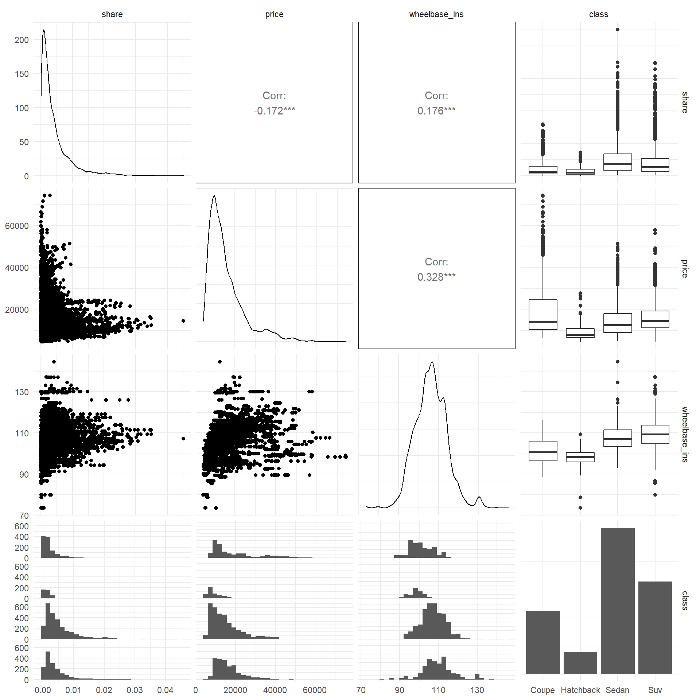
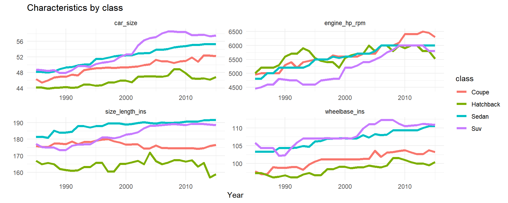
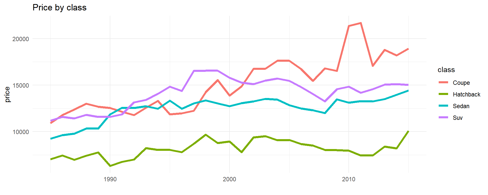
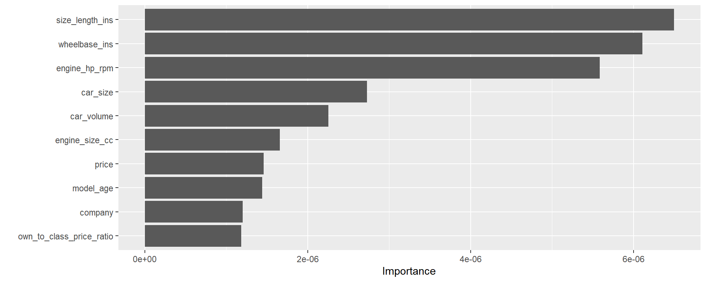

Introduction to the Data
We are working with data on US automobile sales and characteristics. The dataset is a panel with around 7,000 observations, collected annually from 1985 to 2015. There are 7 categorical characteristics, like nationality and transmission type, and about 30 numerical characteristics, like miles per gallon and size.
In this data, an observation is a model-year pair, where “model” is a distinct level of aggregation relative to “brand” or “trim.” To be more specific, an individual automobile may be identified at several different levels: its brand, model, trim, and of course at the highest level of granularity, its VIN (vehicle identification number). For example, a Ford F-150 has a brand identifier (Ford), a model identifier (F), and a trim identifier (150). Though we have characteristics data at the trim level, we only have sales data at the model level. Thus, we’ve aggregated the characteristics data to be at the model level in this dataset. We used a “flagship” aggregation rule: we use the characteristics for the flagship trim of each model as the aggregate characteristics. This aggregation rule may be revisited later.
In addition to automobile sales and characteristics, we also have yearly data on several US macroeconomic indices. These include gas prices, household income distributions, and foreign exchange rates for countries from which automobiles may be imported.
Below we show some summary data for selected variables, at the year level (for ease of exposition, we only show every other year):
| Year-Level Summary Statistics, Selected Variables | ||||||||
|---|---|---|---|---|---|---|---|---|
| Year | No. Models | No. Brands | Mean Price | No. Sales | Top Nationality | Mean MPG | Mean HP | Mean Length |
| 1985 | 182 | 34 | 9454.428 | 15163386 | US | 23.84048 | 102.8360 | 183.6789 |
| 1987 | 196 | 38 | 9994.751 | 14934768 | US | 23.48636 | 108.9208 | 181.3905 |
| 1989 | 202 | 39 | 10671.578 | 14917530 | US | 23.12375 | 121.2554 | 185.7974 |
| 1991 | 209 | 41 | 10673.387 | 12378014 | US | 22.63481 | 127.8219 | 184.6663 |
| 1993 | 200 | 38 | 10817.916 | 13461858 | US | 22.83412 | 135.5796 | 185.3026 |
| 1995 | 193 | 39 | 11469.942 | 14588646 | US | 22.46068 | 144.2261 | 188.2647 |
| 1997 | 201 | 38 | 12370.492 | 14866421 | US | 21.96488 | 160.9176 | 192.9850 |
| 1999 | 204 | 38 | 12555.160 | 16653783 | US | 21.77168 | 167.7466 | 192.0241 |
| 2001 | 226 | 39 | 12379.414 | 16523184 | US | 21.45636 | 178.2513 | 192.8912 |
| 2003 | 229 | 39 | 12714.017 | 16475475 | US | 21.46181 | 187.1438 | 194.5159 |
| 2005 | 247 | 38 | 12587.862 | 17117875 | US | 21.96537 | 196.6551 | 194.1015 |
| 2007 | 260 | 38 | 11896.931 | 16053692 | US | 23.07849 | 201.7121 | 193.0215 |
| 2009 | 254 | 38 | 12321.794 | 10051333 | US | 24.82349 | 200.4500 | 191.0952 |
| 2011 | 247 | 36 | 12121.126 | 12364086 | Japan | 26.01192 | 209.4017 | 191.6562 |
| 2013 | 252 | 35 | 12108.032 | 15251400 | Japan | 29.29800 | 211.0099 | 191.0271 |
| 2015 | 248 | 35 | 12236.018 | 16827881 | Japan | 30.13905 | 207.5616 | 191.2211 |
All means are sales-weighted.
Note that the total number of models in the dataset is almost 700, which means that there is significant variation in the types of models available each year. However, the number of brands is fairly constant across years, with a slight decline towards the end of the time period.
Prices are rising throughout the time period (note that prices are in 1982 dollars). Sales are quite variable; note in particular the sharp decline in sales in 2009 (likely due to the recession). Finally, note that the most common nationality of car by 2010 was Japan, while it had been the United States for the first 25 years of the data.
Market Shares
Since we’re interested in demand estimation a la BLP, it’s worth examining our data in the context of market shares. Just like BLP, we will treat each year as a market. Market shares can thus be calculated at the model level by dividing sales by the total sales for that year. For the purposes of exploratory analysis, we will ignore analyzing the so-called outside option market share.
Below we use a treemap to showcase the median market shares for each brand, grouped together by company. In addition, the median price (inflation-adjusted) for each brand is denoted by its color.

Clearly, the top five or six companies (Ford, GM, Honda, etc.) dominate the US automobile industry, making up around three-quarters of the market in terms of sales. This is perhaps an apt illustration of the Pareto principle: around 80 percent of the revenue is made by around 20 percent of the companies.
In addition, this principle is somewhat replicated within companies. We see many larger (and even smaller) manufacturers making most of their sales from their “baseline” brand; for example, think Chevrolet for General Motors or Toyota for Toyota. Then, each company may branch out into other, smaller brands, typically first choosing to create a luxury brand: think Cadillac for General Motors or Lexus for Toyota. The largest companies have several brands appealing to more niche markets: think of the cost-conscious Saturn for General Motors or the outdoorsy Jeep brand for Fiat Chrysler.
What about shares at the model level? Below we plot shares and inflation-adjusted prices for each model across all years.

A demand curve doesn’t jump off the page from this graph, but we shouldn’t expect it to. Partially this could be due to simultaneity, but also remember that this is a differentiated products market. Thus, our analysis will need to control for different characteristics of the cars in order to estimate a reasonable demand curve.
Though we can’t visually see the demand curve from this plot, we can make a note of a couple of interesting facts about the automobile market. First, we can clearly see that models with high market share tend to be on the cheaper side - though perhaps not the cheapest. This matches well with the basic intuition that lower prices = higher demand. And second, we see that models with extremely high prices, like Porsches or Jaguars, tend to have rather low market share. This also matches up well with our intuition from the law of demand.
Characteristics
In order to analyze the data further, we will need to divide up the automobile models by their characteristics. Here, we’ll focus on a few important pieces of information we have in our data: nationality, class, and efficiency.
Nationality
A total of eleven nationalities of automobile manufacturers are present in our data. The below plot shows how their market shares have evolved over time.

The US automobile industry is dominated by domestic automobiles and automobiles from three other countries: Japan, Germany, and Korea. However, domestic manufacturers have over time lost their majority share in the market, mainly being replaced by the growth of Japanese and Korean manufacturers.
A reasonable question to ask would be whether this radical change in market share by nationality was caused by price changes. To attempt to answer that question, we plot the median price of automobile models by nationality over time:

This is an interesting result: the prices of Japanese and US automobiles track each other extremely closely throughout the entire time period. The price of German automobiles somewhat decreases towards the end of the period, which does match up with an overall increase in German market share, but the explosion of Japanese automobiles in the US market is still unexplained.
There have been many articles and papers written on the reasons for Japan’s growing dominance in the automobile industry, and most of them focus on the desirable characteristics of the Japanese automobiles relative to those from other countries. We have data on many such characteristics, but we will show one as an example of how automobiles differ systematically in characteristics by nationality.
Customers and reviewers of Japanese automobiles often discuss the relatively light weight of Japanese cars, relative to American or German counterparts. Below we plot the median prices and weights of cars from each of the four main nationalities for each year of our data.

This plot shows clear separations between the nationalities on the weight dimension. Japanese and Korean automobiles are the lightest, whereas American and German automobiles tend to be heavier. Certainly weight alone isn’t responsible for the Japanese dominance in the US market, but this at least shows us that there are some noticeable distinctions in characteristics that might help to predict market shares when we enter that stage of our project.
Class
There are several different types, or classes, of automobiles sold on the market: sedans, pickup trucks, SUVs, etc. Our data contain eight such class identifiers. Over the 30-year time period that we analyze, the market composition by class has changed signficantly. See the following plot for a summary of the relevant trends:

Overall, the most stark trend is the decreasing market share of sedans, and the increasing market share of SUVs. The increasing market share of SUVs is a topic of some significant discussion. Popular explanations are that SUVs offer the family-friendly size of minivans with better style, and that the high driving position is desirable to buyers. Interestingly, little is said about price; in fact, SUVs are rather more expensive and less efficient than their sedan or minivan counterparts. Clearly, characteristics like size and style matter considerably for automobile demand.
Does the demand curve differ by class? Take a look at the following (winsorized) plot to see:

Each point in the plot represents a model. This plot gives us some interesting intuition about demand elasticities across different classes of vehicles. For example, demand for minivans and pickup trucks appears almost flat, implying a very elastic demand curve. Particularly for minivans, this integrates well with our intuition about these types of vehicles: buyers are purchasing these vehicles for practical purposes, and are fairly cost-sensitive.
Coupes, on the other hand, tell a different story. While there appears to be a flat portion of the demand curve, there is also an almost vertical portion. Towards the top, you may find expensive sports cars like Porsches and Jaguars. These vehicles are probably purchased by buyers who are looking for style and luxury over cost, and thus have a more inelastic demand.
Sedans and SUVs are the default vehicles for most US buyers, and thus seem to have a demand curve that falls somewhere in between the former two categories. While many options are available for cost-conscious buyers, we can see that there are more expensive luxury versions available, and demand for these versions is less elastic.
Efficiency
As we’ve seen, automobile characteristics like nationality and class have been changing significantly from 1985 to 2015, and these characteristics matter to consumers. But at least superficially, they have little to do with how a given car actually performs. For this information, we can turn to metrics such as horsepower and fuel efficiency.
Metrics like horsepower give information about the power of a car’s engine; loosely, the higher the horsepower, the faster a car can drive and the faster it accelerates. However, it is also important to consider the ratio of horsepower to weight, as a lower horsepower but lighter car can sometimes outrun a heavier, higher horsepower vehicle.
The number of cylinders in the engine is a similar metric: the more cylinders, the more power the engine tends to have. However, the differences have become smaller as new technologies have improved engine efficiency.
Finally, the price you pay for a more powerful engine, whether measured in horespower of number of cylinders, is typically a loss of fuel efficiency. This can significantly increase the cost of owning and operating the vehicle.
Over time, we see some striking trends in these metrics:

Horsepower has significantly increased over time, even when accounting for changes in car weight. The median number of cylinders started out at 4, increased to 6, and in recent years has returned to 4. All the while, the median miles per gallon was fairly constant until the mid-2000s, when it began to significantly increase. We might conjecture that consumers began to value fuel efficiency more than they did earlier. In addition, the introduction of hybrid and electric cars to the market would surely increase the median miles per gallon.
Does horsepower correlate with market share? We might surmise that if customers value horsepower, we would see a positive correlation with horsepower and market share. However, the data tells a different story:

There’s no obvious association here. By the way, this isn’t unique to horsepower - even the fuel efficiency variables show rather little association with market share.
On the other hand, when we look at the association between horsepower and price, we see a much stronger correlation:

This positive correlation is fairly consistent over time. Thus, while factors like horsepower may not be strong predictors of market share, they may still be correlated with price.